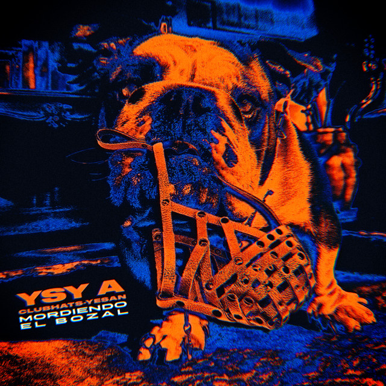
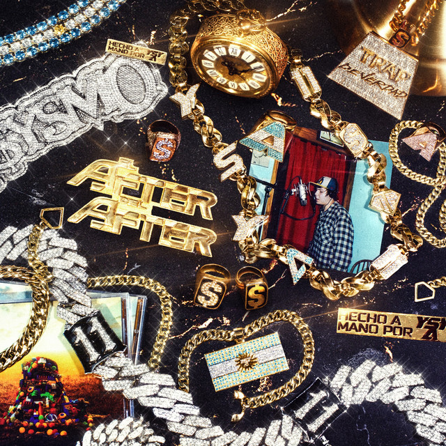

Artesana 247

Este fue su álbum debut y el comienzo de su carrera solista. Lo publicó justo un año después del cierre de El Quinto Escalón. Inspirado en “La Mansión” donde vivió junto a Duki y Neo Pistea, el disco captura la energía del nacimiento del trap argentino. Destacados: Tamo Loco, Vuelta a la Luna, Enamorada del Diablo.
Hecho a mano

El título representa su independencia artística: un trabajo hecho sin sellos ni productores externos, “a mano”.
Aquí YSY A empieza a experimentar con sonidos más melódicos y reflexivos.
Destacados: Casi un G, Vuelta a la Luna II, Sin Drama.
Mordiendo el bozal

En medio de la Pandemia de COVID-19, Acosta, se encontraba encerrado y sin poder grabar sencillos de manera profesional, alejado del trap crudo que mostraba en Hecho a Mano lanzado en 2019, se centró en un estilo más romántico y relajado.
YSYSMO

El nombre mezcla “YSY” y “sismo”, simbolizando un movimiento interno. Es un disco conceptual con sonidos más experimentales, guitarras, y letras más personales.
Destacados: Traje unos Tangos, En el Club, Un Flow de Infarto.
Trap de verdad

Este disco tiene un tono más introspectivo y maduro. Combina trap con influencias del rock y pop, reflexionando sobre el éxito, el paso del tiempo y la identidad.
Destacados: Mi Manera de Ser, Cuánto Vale?, Te Pintaron Pajaritos.
El after del after

Los sencillos del álbum fueron grabados y filmados en Europa, mientras Acosta continuaba la gira del álbum Ysysmo. El after del after fue lanzado con el previo anuncio del concierto que Acosta brindaría en el Estadio Tomás Adolfo Ducó en diciembre de ese mismo año, por lo que su presentación oficial sería en ese mismo estadio. Antes de presentar el disco anunció un gira nacional que daría inicio a finales de 2023 y 2024, esta abarcó Argentina, Uruguay México, El Salvador, Guatemala, Colombia y Chile.
Trampa al tiempo

Fue lanzado oficialmente el 11 de noviembre de 2024, El disco contó con 11 sencillos y producciones de Oniria, Emirsito, Baxian, Koki LS, Naim, Chiru!, Orodembow y Gllato. En el proyecto, Acosta, trato de plasmar una trampa que el y su equipo le hicieron al tiempo, denotando la vigencia de su música y mostrando en la tapa del presente todos sus discos, desde Antezana 247 hasta su último proyecto: El after del after. En conjunto, anunció el show presentación del proyecto en el Estadio Ferrocarril Oeste el 15 de diciembre de ese mismo año.